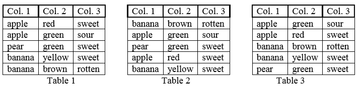

Consider a table with rows and columns. The columns are numbered from $1$ to $C$. For simplicity's sake, the items in the table are strings consisting of lower case letters.

You are given the operation Sort(k) on such tables: Sort(k) sorts the rows of a table in the order of the values in column $k$ (while the order of the columns does not change). The sort is stable, that is, rows that have equal values in column $k$, remain in their original order. For example, applying Sort(2) to Table 1 yields Table 2. We are interested in sequences of such sort operations. These operations are successively applied to the same table. For example, applying the sequence Sort(2); Sort(1) to Table 1 yields Table 3. Two sequences of sort operations are called equivalent if, for any table, they have the same effect. For example, Sort(2); Sort(2); Sort(1) is equivalent to Sort(2); Sort(1). However, it is not equivalent to Sort(1); Sort(2), because the effect on Table 1 is different.
Task
Given a sequence of sort operations, determine a shortest equivalent sequence.
 Comet OJ
Comet OJ